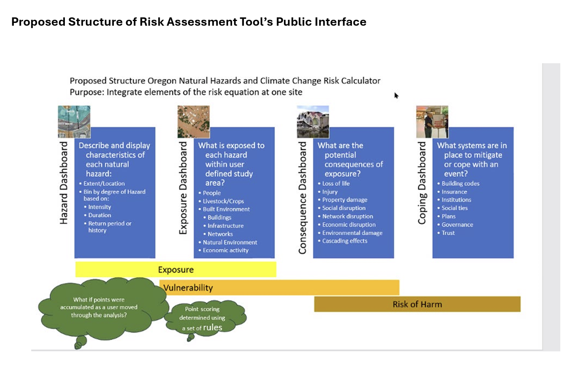

Conocimiento del riesgo de desastres

Ley 1523 de 2012. Por la cual se adopta la Política Nacional de Gestión del Riesgo de Desastres y se establece el Sistema Nacional de Gestión del Riesgo de Desastres y se dictan otras disposiciones. Link. - Decreto 1807. pdf
Decreto Ley 4147 de 2011. Link - Ley 1931 de 2018 (Ley de cambio climático) por la cual se establecen directrices para la Gestión del Cambio Climático. Ver glosario. Link.
Plan Nacional de Gestión del Riesgo 2015-2025. Sistema Nacional para la Gestión del Riesgo de Desastres Link.
Visor de desastres y emergencias. UNGRD. 2023. Link.
Visor de información territorial para Municipios. UNGRD. Link
Introducción a la GRD
Amenazas
- The 2025 update of the UNDRR-ISC Hazard Information Profiles (HIPs). 2025. Link
- Hazard Information Profiles (HIPs) online reference. Link.
Monitoreo de las amenazas
Visores Colombia
Recursos
Escenarios de riesgo
- Effectiveness of California earthquake scenarios in motivating mitigation. Earthquake spectra. 2025. Link.
Vulnerablidad
Física
- The use of empirical vulnerability functions to assess the response of buildings to tsunami impact: Comparative review and summary of best practice. Tarbotton, et al. Earth Science Reviews. Link
Artículos científicos
- We need to predict the people disasters will hit, not just the places. Nature 2025. Link.
- Territorial vulnerability assessment frame in Colombia: Disaster risk management. Villegast et al. 2017. IJDRM. Link.
- Framing vulnerability, risk and societal responses: the MOVE framework. Natural Hazards. 2013. Link.
- Social vulnerability in Colombia. 2020. IJDRR. Link.
- Social vulnerability in a multi-hazard context: a systematic review. Environmental Research Letters. 2022. Link.
- Cardona, O.D.: The need for rethinking the concepts of vulnerability and risk from a holistic perspective: a necessary review and criticism for effective risk management. In: Indicators of Risk Management and Vulnerability Reduction: Case Studies in Latin American Urban Areas, United Nations University, Institute for Environment and Human Security (2011). Link.
- Explaining differential vulnerability to climate change: A social science review. Wires Climate Change. 2018. Link.
- Understanding human vulnerability to climate change: A global perspective on index validation for adaptation planning. Science of The Total Environment. 2022. Link.
Evaluación del riesgo
Metodologias
Understanding disaster risk: foundational concepts and principles. UNDRR. Link.
- Why reducing risk matters
- Components of risk
- Risk drivers
- Key concepts
- The DRR glossary
- Engage in DRR
Disaster, Planning and Development: Managing Natural Hazards to Reduce Loss. OEA. Link, Link.
Bernal G.A., Cardona OD., Marulanda M.C., Carreño ML. (2021) Dealing with Uncertainty Using Fully Probabilistic Risk Assessment for Decision-Making. In: Eslamian S., Eslamian F. (eds) Handbook of Disaster Risk Reduction for Resilience. Springer, Cham. https://doi.org/10.1007/978-3-030-61278-8_14
Oregon Natural Hazards Risk Assessment Upgrade. Link. Link. Youtube

Metodolgias de FEMA
- National Risk Index Documentation. Link.
- National Risk Index for Natural Hazards. Visor.
- National Risk Index Hazard Info Table
- Updating the Indicators of Disaster Risk and Risk Management for the Americas. 2011. Link.
- Earthquake Hazard Maps. Link.
- Flood Map. Link.
Herramientas para el análisis de riesgos
- The CAPRA (Probabilistic Risk Assessment) Platform. Link.
- Cuadernos de trabajo (ver repositorios)
- Software
Artículos científicos
- A review of risk analysis methods for natural disasters. Nat Hazards 100, 571–593. Sun, R. et al. 2020. Link
- Hybrid loss exceedance curve (HLEC) for disaster risk assessment. Velazquez et al. 2020. Link
- Assessing global exposure and vulnerability towards natural hazards: the Disaster Risk Index. Peduzzi, et al. 2009, Nat. Hazards Earth Syst. Link
Evaluación del riesgo
Evaluación del riesgo en la infraestructura escolar
- Webinar ‘Community Hazard Risk Tools: Structural Fragility and Vulnerability and System Reliability Mapping’ by the UNESCO Chair in DRR & RE, UCL. Link.
Comunicación del riesgo

- Disaster Risk Communication Hub. Link
- Global Platform elevates risk communication as essential for disaster risk reduction. 2025. Link.
- Principles of Risk Communication Worksheets Now Available for Hazards Practitioners. Natural Hazard Center. Link.
- The SAGE Handbook of Risk Communication. 2014. Link.
- First Responder Communication Strategies Interim Workshop. 2024. Link
Risk communication
Percepción del riesgo
- The social-psychological determinants of climate change risk perceptions: Towards a comprehensive model. 2015. Link.***
- Risk perceptions of COVID-19 around the world. Journal of Risk Research. 2020. Link.
- Determinants and Measurement of Climate Change Risk Perception, Worry, and Concern. Climate Science. 2017. Link.
- The Feeling of Risk. New Perspectives on Risk Perception. Paul Slovic. 2010. Link.
- American Risk Perceptions: Is Climate Change Dangerous? 2005. Link.
- Global Warming Risk Perceptions in India. 2020. Link.
- 2021 Global Risks Scientists’ Perceptions survey. Link.
- Future Earth Risk Perception Report 2020. Link.
- What shapes perceptions of climate change. 2010. Link.
- Sentiment analysis. 2022. Text mining for information professionals. Link.
- Lineamientos para el análisis de la vulnerabilidad social en los estudios de la gestión municipal del riesgo de desastres. UNGRD. 2017. Link.
- Colombia
- Modelo de análisis de la vulnerabilidad psicosocial en la gestión del riesgo de desastres. 2017. Link.
- Investigadores:
La percepción del riesgo y diversos abordajes de la gestión integral del riesgo. Coursera. Link.
Riesgos compuestos, en cascada, y sistémicos
- Knowledge Action Network on Emergent Risks and Extreme Events. Risk Kan. Link. Webinars. Working groups.
- Lecturas:
- Insurers Are Deserting Homeowners as Climate Shocks Worsen. NYT. 2024. Link.
Compound, cascading and systemic risk
Eventos compuestos
- Guidelines for Studying Diverse Types of Compound Weather and Climate Events. 2021. Link
- High impact compound events in Australia. Link
- Significantly wetter or drier future conditions for one to two thirds of the world’s population. 2024. Nature Comm. Link
Eventos compuestos
Eventos extremos
- What is detection and attribution? ARC. Link.
- IPCC AR6. Weather and climate extreme events in changing climate. Link
- TOP 10 THINGS TO KNOW ABOUT EXTREME EVENT ATTRIBUTION. Climate Central. Link
- Attribution of Extreme Events to Climate Change. Annual Review of Environment and Resourses. 2023. Link
- Climate-Informed Risk Assessment for Extreme Events. AGU 24. Link.
- Alguna evidencia para Colombia. Link. Link. Link. Link. Link.
Resiliencia
- Revisión sistemática sobre la capacidad de adaptación y resiliencia comunitaria ante desastres socionaturales en América Latina y el Caribe. 2023. REDER. Link
- Enhancing social resilience to climate change impacts: progresses, constraints and opportunities. AGU 2025. Link.
- Measuring resilience and recovery. 2016. IJDRR. Link
- A resilience glossary shaped by context: Reviewing resilience-related terms for critical infrastructures. 2023. IJDRR. Link
- OXFAM. Resilience knowledge hub. The Future is a Choice Absorb, adapt, transform Resilience Capacities. Link
Videos sobre resiliencia
Análisis forense de desastres
- UNDRR. Disaster forensics: Learning from the past to build a resilient future. Link
- Disaster Forensics. Understanding Root Cause and Complex Causality. 2016. Springer. Link.
- A systematic review of forensic approaches to disasters: Gaps and challenges. Link.
- GAR Special Report 2024. Forensic Insights for Future Resilience: Learning from Past Disasters. Link.

Disaster Forensics - UNDRR
Las siguientes preguntas describen un cuestionario simplificado para realizar un análisis forense de cualquier desastre. Las preguntas siguen los tres pasos clave de la metodología FORIN (Investigaciones Forenses de Desastres) (UNDRR. Disaster Forensics. Link)
PASO 1 – COMPRENDER EL ADN DEL DESASTRE
Analizar los factores específicos de peligro, exposición y vulnerabilidad que hicieron de este desastre un desastre único y significativo. Esto implica un análisis descriptivo del peligro, la exposición, las condiciones inseguras y los patrones subsiguientes de daños, pérdidas e impacto.
¿Qué pasó? (Peligro)
¿Qué desencadenó el acontecimiento?
¿El evento principal condujo a eventos secundarios relacionados? Por ejemplo, ¿causó el terremoto deslizamientos de tierra o roturas de presas que provocaron inundaciones?
¿Dónde se concentró el daño? (Exposición)
¿Cómo se expusieron los elementos sociales y ambientales?
¿Cómo ha evolucionado la exposición a lo largo del tiempo y el espacio en relación con el desarrollo planificado o no planificado y las amenazas físicas?
¿Las regulaciones de zonificación, los controles de uso del suelo y los códigos de infraestructura eran adecuados para los niveles de riesgo existentes en diferentes áreas?
¿Los cambios en los niveles de exposición se debieron a decisiones sociales sobre la ubicación o a cambios en el entorno físico? ¿Cuál fue el papel de la deforestación, el diseño y la construcción urbana, o incluso el cambio climático?
¿Cuál era la estructura social y económica de las comunidades expuestas?
¿Cómo se distribuyeron las pérdidas y los daños entre diferentes áreas, grupos sociales y tipos de infraestructura?
¿Qué factores influyeron en la expansión territorial? ¿Se ocuparon las zonas más seguras antes que las más vulnerables?
¿Las leyes y normas ambientales abordaron las preocupaciones sobre peligros y vulnerabilidad?
¿Existió una relación clara entre la exposición a peligros y los niveles de pobreza? ¿Cómo aumentaron los factores de riesgo crónicos (desempleo, mala salud, drogadicción o violencia personal y social) el riesgo y el impacto de los desastres?
¿Existe una legislación adecuada a nivel nacional y local, incluidos códigos de construcción, aplicación y especificidad en cuestiones de gestión de riesgos?
¿Existe un seguro contra pérdidas o responsabilidad civil? ¿Es obligatorio?
¿Se integró la gestión del riesgo de desastres en otras áreas de políticas como la planificación urbana, la gestión ambiental y los seguros?
¿Existen capacidades de investigación y educación centradas en la concientización sobre los riesgos y la cobertura de seguros?
¿Quién sufrió más y por qué? (vulnerabilidad)
¿Cómo contribuyeron el crecimiento y la distribución de la población en el pasado al desastre?
¿Qué papel desempeñaron la degradación ambiental y el agotamiento de los servicios ecosistémicos?
¿Cuáles fueron los impactos de la pobreza y la distribución del ingreso?
¿Qué fue resiliente?
¿Cuáles fueron los elementos institucionales y de gobernanza que contribuyeron a la resiliencia?
Resultado del Paso 1 = Identificación de las cadenas de ADN clave (puntos de inflexión únicos) que hicieron de este desastre algo único. La inclusión de relatos del desastre y conversaciones con las personas afectadas puede profundizar el análisis y proporcionar una visión realista de las acciones propuestas para la reducción del riesgo.
PASO 2 – TENDENCIAS FUTURAS
Analice más a fondo las áreas clave identificadas del ADN del desastre y prediga las posibles tendencias futuras hasta 2050. Por ejemplo, si la urbanización y los asentamientos informales fueron los principales contribuyentes a los daños causados por las inundaciones, ¿cuáles son las tendencias actuales y futuras probables para la urbanización y los asentamientos informales?
Resultado del paso 2 = Realizar un análisis de previsión futura para identificar qué áreas de riesgo actual es probable que aumenten en el futuro.
PASO 3 – APRENDIZAJE FORENSE
Facilitar un debate entre múltiples partes interesadas para revisar y refinar el análisis, creando conjuntamente políticas potenciales y acciones prácticas para reducir el riesgo asociado con cada cadena de ADN identificada, considerando los impactos del desastre y los escenarios futuros
Lecturas varias
- The Hazards Posed by Mesoscale Lightning Megaflashes. Link.
- GMT Tutorial is an open source collection of ~65 tools for manipulating geographic and Cartesian data sets. Link
- How smartphones are being used to monitor ageing bridges. Link.
- THE COST OF DOING NOTHING. Link.
- 97% de los POT no tiene estudios de amenazas y riesgo urbano. El Nuevo Siglo. Link.
- Los desastres no son naturales. El País. Link.
Social
PDC. Vulnerability Indicators. PDC’s vulnerability analysis measures the physical, environmental, social, and economic conditions and processes that increase susceptibility of communities and systems to the damaging effects of hazards. Multiple factors influencing disaster outcomes, including those linked to poverty and development, are considered in the analysis.